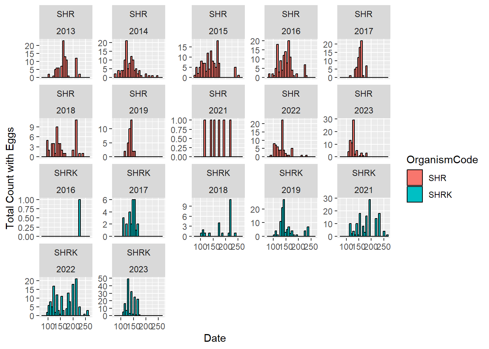

High densities could affect invertebrate prey abundance, creating competition for resources between E. modestus and native shrimps and fishes
Mississippi grass shrimp (Palaemonetes kadiakensis) was first documented in collections in 2005 and 2006 in Consumnes River. In 2012, one was caught by the Bay Study in the lower San Joaquin River and several collected in Georgian Slough by USFWS (Brown and Hieb 2014).
Smallest of the introduced shrimps
Less known about their role in the estuary
Photo by Steve Slater
Current Data Collection Practices:
YBFMP
Shrimp data was not routinely collected until 2012 when a new species, Mississippi Grass Shrimp (species code: SHRK), was noticed in the Delta. The YBFMP then enhanced it’s data collection for shrimp to better track the spread of this new species in the system. The other species commonly found in YBMFP sampling are the invasive Siberian Prawn (species code: SHR).
When encountered in the beach seine, fyke trap, or rotary screw trap, shrimp are identified to species and up to 20 of each species are measured, after which they are plus counted (same treatment as non-native fish species). For shrimp which are measured, the crew also denotes whether or not the individual shrimp has visible eggs. Measurements are taken from the eye to the end of the telson.
Typically, only shrimp/fish equal to or greater 25mm in length are measured and counted
Shrimp are considered incidental bycatch as these gear types don’t effectively target benthic invertebrates
Other IEP Surveys
DJFMP: counts and identifies shrimp, counts jellyfish (pers comms Jacob Stagg)
CDFW 20-mm and SLS: identify and measure jellyfish. The reason is that they can compete with larval fish for food, and jellyfish share a good indicator of salinity movement (pers comms Jessica Jimenez)
Fall Midwater Trawl: identifies and counts all fish and invertebrates (IEP website)
Fish Restoration Program: appears only fish processed from fish sampling gear (IEP website)
Bay Study: Fish, caridean shrimp, and brachyuran crabs are identified, measured, and counted. Shrimp and crabs are also sexed (IEP website, Brown and Hieb 2014)
Suisun Marsh: Fish and large invertebrates (e.g., clams, shrimps) are identified to species (IEP website)
Summer Tow Net: Enumerates all fishes and several invertebrate species (IEP website; inverts appear to include jellyfish and shrimp)
Fish salvage: only new or unusual species recorded, such as Mitten crab (pers comms Kyle Griffiths)
In summary, no other IEP long term monitoring programs appear to collect the level of shrimp data that is collected by the YBFMP besides the CDFW Bay Study.
#total shrimp counted in a year since 2012totalcatch.all <- totalcatch.yr %>%filter(OrganismCode %in%c("SHR", "SHRK", "SPLT", "CHN")) %>%filter(Year >"2011") %>%group_by(OrganismCode) %>%summarize("Full.Count"=sum(Tot.Count))totalcatch.all$IDTime_sec <-15totalcatch.all$TotalTime_hrs <- (totalcatch.all$Full.Count * totalcatch.all$IDTime_sec)/3600totalcatch.all$TotalTime_hrs_yr <- totalcatch.all$TotalTime_hrs/10totalcatch.all$TotalCost_yr <- totalcatch.all$TotalTime_hrs *137.76knitr::kable(head(totalcatch.all), "simple")
OrganismCode
Full.Count
IDTime_sec
TotalTime_hrs
TotalTime_hrs_yr
TotalCost_yr
CHN
4379
15
18.24583
1.824583
2513.546
SHR
147246
15
613.52500
61.352500
84519.204
SHRK
4884
15
20.35000
2.035000
2803.416
SPLT
53865
15
224.43750
22.443750
30918.510
In the last decade, YBFMP staff have spent roughly 350% more time counting and identifying shrimp than the most abundant native fish species, Sacramento Splittail. The total time just identifying and counting is approximately 1.5 weeks of work per year. The total average annual cost is ~$80k.
#are length frequencies significantly different by year? (exclude low count and covid years)#total shrimp measured in a year since 2012fish_unique2$Count <-1shrimp.meas <- fish_unique2 %>%filter(OrganismCode %in%c("SHR", "SHRK")) %>%filter(Year >"2011") %>%group_by(OrganismCode) %>%summarize("Full.Count"=sum(Count))shrimp.meas$MeasTime_sec <-30shrimp.meas$TotalTime_hrs <- (shrimp.meas$Full.Count * shrimp.meas$MeasTime_sec)/3600shrimp.meas$TotalTime_hrs_yr <- shrimp.meas$TotalTime_hrs/10knitr::kable(head(shrimp.meas), "simple")
OrganismCode
Full.Count
MeasTime_sec
TotalTime_hrs
TotalTime_hrs_yr
SHR
18641
30
155.3417
15.53417
SHRK
2907
30
24.2250
2.42250
Thoughts:
Missing a good portion of the length frequency curve given 25mm size cutoff, affects smaller SHRK more than SHR
Visually, no striking difference across years which makes me think additional years of data aren’t critical to improve our understanding
About 2 days/yr spent measuring shrimp - doesn’t seem too bad in theory but when this time overlaps with hot summer field days it can have larger impacts on the field crews
#by year - note the very low numbersfish_unique2 %>%filter(OrganismCode %in%c("SHR", "SHRK")) %>%filter(Year >"2011") %>%filter(Expression=="EGGS") %>%ggplot(aes(x=ForkLength, fill=OrganismCode)) +geom_histogram(position="identity", colour="black") +facet_wrap(~OrganismCode*Year, scales ="free_y") +labs(x ="Fork Length", y="Total Count with Eggs")
fish_unique2$Jday <-as.integer(format(fish_unique2$SampleDate, format ="%j"))#timing of eggs - update with Julian day on the X axisfish_unique2 %>%filter(OrganismCode %in%c("SHR", "SHRK")) %>%filter(Expression=="EGGS") %>%filter(Year >"2011") %>%ggplot(aes(x=Jday, fill=OrganismCode)) +geom_histogram(position="identity", colour="black") +facet_wrap(~OrganismCode*Year, scales ="free_y") +labs(x ="Date", y="Total Count with Eggs")

Thoughts:
Based on our bycatch data, we see peak egg presence in SHR around a length of 55mm and between 27-31mm for SHRK. These trends generally track across years.
Timing of egg presence fluctuates a bit more across day of year, but is based on very low sample size. We see more in the late winter/spring but this may be confounded by the fact our screw trap only operates Jan-Jun.
Recommendations:
Stop measuring shrimp and recording eggs.
We have collected enough information already to understand the size distribution of shrimp in the Yolo Bypass and peak fecundity based on size for each species. Additional data are not worth the additional effort and not necessary for consistency across IEP.
Lump all shrimp into a single plus count (don’t speciate) but add a section to datasheet to mark which shrimp species were present.
Not totally sure about this one. Could be complicated on the datasheet. May preclude shrimp data we do collect from being used in syntheses.
Include counts for other bycatch, such as crayfish and tadpoles.
Would be a small effort and most other IEP surveys that count shrimp also include other non-fish bycatch.